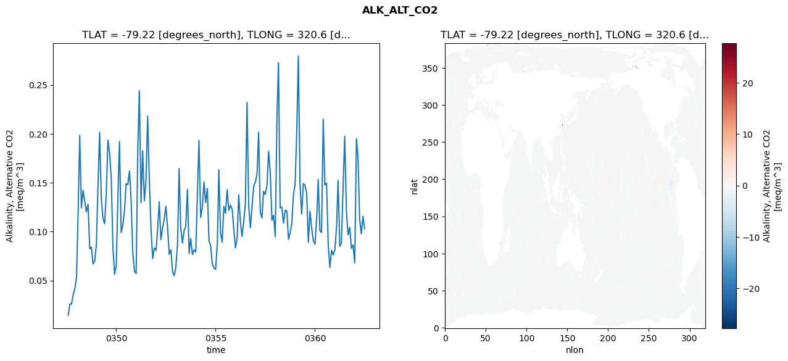
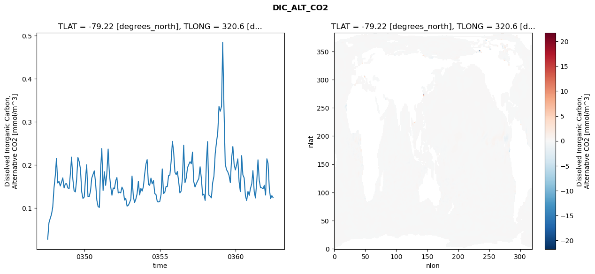
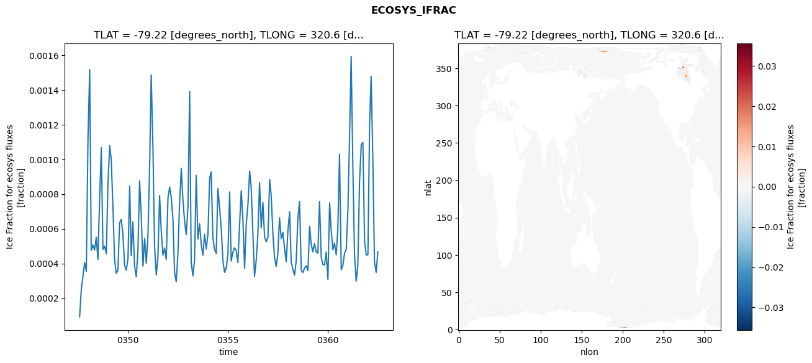

glb-dor_North_Atlantic_basin_043_1999-07-01_00174#
Simulation details#
Case: smyle.cdr-atlas-v0.glb-dor_North_Atlantic_basin_043_1999-07-01_00174.001
Basin: North_Atlantic_basin
Polygon: 43.0
Start date: 1999-07
Show code cell source Hide code cell source
import xarray as xr
import matplotlib.pyplot as plt
Show code cell source Hide code cell source
zarr_store = "/path/to/zarr/store"
# Parameters
zarr_store = "/global/cfs/projectdirs/m4746/Projects/Ocean-CDR-Atlas-v0/data/validation/smyle.cdr-atlas-v0.glb-dor_North_Atlantic_basin_043_1999-07-01_00174.001.validation.zarr"
Show code cell source Hide code cell source
%%time
ds_o = xr.open_zarr(zarr_store).compute()
ds_o
CPU times: user 711 ms, sys: 486 ms, total: 1.2 s
Wall time: 1.38 s
<xarray.Dataset> Size: 2MB
Dimensions: (nlat: 384, nlon: 320, time: 180)
Coordinates:
TLAT float64 8B -79.22
TLONG float64 8B 320.6
ULAT float64 8B -78.95
ULONG float64 8B 321.1
* time (time) object 1kB 0347-08-01 00:00:00 ... 0362-07-01 0...
z_t float32 4B 500.0
Dimensions without coordinates: nlat, nlon
Data variables:
ALK_ALT_CO2_diff (nlat, nlon) float32 492kB nan nan nan ... nan nan nan
ALK_ALT_CO2_rmse (time) float64 1kB 0.01465 0.0261 ... 0.1158 0.103
DIC_ALT_CO2_diff (nlat, nlon) float32 492kB nan nan nan ... nan nan nan
DIC_ALT_CO2_rmse (time) float64 1kB 0.02732 0.06551 ... 0.1283 0.1238
ECOSYS_IFRAC_diff (nlat, nlon) float32 492kB nan nan nan ... nan nan nan
ECOSYS_IFRAC_rmse (time) float64 1kB 9.228e-05 0.0002507 ... 0.0004672
FG_ALT_CO2_diff (nlat, nlon) float32 492kB nan nan nan ... nan nan nan
FG_ALT_CO2_rmse (time) float64 1kB 3.571e-06 8.398e-06 ... 1.535e-05xarray.Dataset
- nlat: 384
- nlon: 320
- time: 180
- TLAT()float64-79.22
- long_name :
- array of t-grid latitudes
- units :
- degrees_north
array(-79.22052261)
- TLONG()float64320.6
- long_name :
- array of t-grid longitudes
- units :
- degrees_east
array(320.56250892)
- ULAT()float64-78.95
- long_name :
- array of u-grid latitudes
- units :
- degrees_north
array(-78.95289509)
- ULONG()float64321.1
- long_name :
- array of u-grid longitudes
- units :
- degrees_east
array(321.12500894)
- time(time)object0347-08-01 00:00:00 ... 0362-07-...
- bounds :
- time_bound
- long_name :
- time
array([cftime.DatetimeNoLeap(347, 8, 1, 0, 0, 0, 0, has_year_zero=True), cftime.DatetimeNoLeap(347, 9, 1, 0, 0, 0, 0, has_year_zero=True), cftime.DatetimeNoLeap(347, 10, 1, 0, 0, 0, 0, has_year_zero=True), cftime.DatetimeNoLeap(347, 11, 1, 0, 0, 0, 0, has_year_zero=True), cftime.DatetimeNoLeap(347, 12, 1, 0, 0, 0, 0, has_year_zero=True), cftime.DatetimeNoLeap(348, 1, 1, 0, 0, 0, 0, has_year_zero=True), cftime.DatetimeNoLeap(348, 2, 1, 0, 0, 0, 0, has_year_zero=True), cftime.DatetimeNoLeap(348, 3, 1, 0, 0, 0, 0, has_year_zero=True), cftime.DatetimeNoLeap(348, 4, 1, 0, 0, 0, 0, has_year_zero=True), cftime.DatetimeNoLeap(348, 5, 1, 0, 0, 0, 0, has_year_zero=True), cftime.DatetimeNoLeap(348, 6, 1, 0, 0, 0, 0, has_year_zero=True), cftime.DatetimeNoLeap(348, 7, 1, 0, 0, 0, 0, has_year_zero=True), cftime.DatetimeNoLeap(348, 8, 1, 0, 0, 0, 0, has_year_zero=True), cftime.DatetimeNoLeap(348, 9, 1, 0, 0, 0, 0, has_year_zero=True), cftime.DatetimeNoLeap(348, 10, 1, 0, 0, 0, 0, has_year_zero=True), cftime.DatetimeNoLeap(348, 11, 1, 0, 0, 0, 0, has_year_zero=True), cftime.DatetimeNoLeap(348, 12, 1, 0, 0, 0, 0, has_year_zero=True), cftime.DatetimeNoLeap(349, 1, 1, 0, 0, 0, 0, has_year_zero=True), cftime.DatetimeNoLeap(349, 2, 1, 0, 0, 0, 0, has_year_zero=True), cftime.DatetimeNoLeap(349, 3, 1, 0, 0, 0, 0, has_year_zero=True), cftime.DatetimeNoLeap(349, 4, 1, 0, 0, 0, 0, has_year_zero=True), cftime.DatetimeNoLeap(349, 5, 1, 0, 0, 0, 0, has_year_zero=True), cftime.DatetimeNoLeap(349, 6, 1, 0, 0, 0, 0, has_year_zero=True), cftime.DatetimeNoLeap(349, 7, 1, 0, 0, 0, 0, has_year_zero=True), cftime.DatetimeNoLeap(349, 8, 1, 0, 0, 0, 0, has_year_zero=True), cftime.DatetimeNoLeap(349, 9, 1, 0, 0, 0, 0, has_year_zero=True), cftime.DatetimeNoLeap(349, 10, 1, 0, 0, 0, 0, has_year_zero=True), cftime.DatetimeNoLeap(349, 11, 1, 0, 0, 0, 0, has_year_zero=True), cftime.DatetimeNoLeap(349, 12, 1, 0, 0, 0, 0, has_year_zero=True), cftime.DatetimeNoLeap(350, 1, 1, 0, 0, 0, 0, has_year_zero=True), cftime.DatetimeNoLeap(350, 2, 1, 0, 0, 0, 0, has_year_zero=True), cftime.DatetimeNoLeap(350, 3, 1, 0, 0, 0, 0, has_year_zero=True), cftime.DatetimeNoLeap(350, 4, 1, 0, 0, 0, 0, has_year_zero=True), cftime.DatetimeNoLeap(350, 5, 1, 0, 0, 0, 0, has_year_zero=True), cftime.DatetimeNoLeap(350, 6, 1, 0, 0, 0, 0, has_year_zero=True), cftime.DatetimeNoLeap(350, 7, 1, 0, 0, 0, 0, has_year_zero=True), cftime.DatetimeNoLeap(350, 8, 1, 0, 0, 0, 0, has_year_zero=True), cftime.DatetimeNoLeap(350, 9, 1, 0, 0, 0, 0, has_year_zero=True), cftime.DatetimeNoLeap(350, 10, 1, 0, 0, 0, 0, has_year_zero=True), cftime.DatetimeNoLeap(350, 11, 1, 0, 0, 0, 0, has_year_zero=True), cftime.DatetimeNoLeap(350, 12, 1, 0, 0, 0, 0, has_year_zero=True), cftime.DatetimeNoLeap(351, 1, 1, 0, 0, 0, 0, has_year_zero=True), cftime.DatetimeNoLeap(351, 2, 1, 0, 0, 0, 0, has_year_zero=True), cftime.DatetimeNoLeap(351, 3, 1, 0, 0, 0, 0, has_year_zero=True), cftime.DatetimeNoLeap(351, 4, 1, 0, 0, 0, 0, has_year_zero=True), cftime.DatetimeNoLeap(351, 5, 1, 0, 0, 0, 0, has_year_zero=True), cftime.DatetimeNoLeap(351, 6, 1, 0, 0, 0, 0, has_year_zero=True), cftime.DatetimeNoLeap(351, 7, 1, 0, 0, 0, 0, has_year_zero=True), cftime.DatetimeNoLeap(351, 8, 1, 0, 0, 0, 0, has_year_zero=True), cftime.DatetimeNoLeap(351, 9, 1, 0, 0, 0, 0, has_year_zero=True), cftime.DatetimeNoLeap(351, 10, 1, 0, 0, 0, 0, has_year_zero=True), cftime.DatetimeNoLeap(351, 11, 1, 0, 0, 0, 0, has_year_zero=True), cftime.DatetimeNoLeap(351, 12, 1, 0, 0, 0, 0, has_year_zero=True), cftime.DatetimeNoLeap(352, 1, 1, 0, 0, 0, 0, has_year_zero=True), cftime.DatetimeNoLeap(352, 2, 1, 0, 0, 0, 0, has_year_zero=True), cftime.DatetimeNoLeap(352, 3, 1, 0, 0, 0, 0, has_year_zero=True), cftime.DatetimeNoLeap(352, 4, 1, 0, 0, 0, 0, has_year_zero=True), cftime.DatetimeNoLeap(352, 5, 1, 0, 0, 0, 0, has_year_zero=True), cftime.DatetimeNoLeap(352, 6, 1, 0, 0, 0, 0, has_year_zero=True), cftime.DatetimeNoLeap(352, 7, 1, 0, 0, 0, 0, has_year_zero=True), cftime.DatetimeNoLeap(352, 8, 1, 0, 0, 0, 0, has_year_zero=True), cftime.DatetimeNoLeap(352, 9, 1, 0, 0, 0, 0, has_year_zero=True), cftime.DatetimeNoLeap(352, 10, 1, 0, 0, 0, 0, has_year_zero=True), cftime.DatetimeNoLeap(352, 11, 1, 0, 0, 0, 0, has_year_zero=True), cftime.DatetimeNoLeap(352, 12, 1, 0, 0, 0, 0, has_year_zero=True), cftime.DatetimeNoLeap(353, 1, 1, 0, 0, 0, 0, has_year_zero=True), cftime.DatetimeNoLeap(353, 2, 1, 0, 0, 0, 0, has_year_zero=True), cftime.DatetimeNoLeap(353, 3, 1, 0, 0, 0, 0, has_year_zero=True), cftime.DatetimeNoLeap(353, 4, 1, 0, 0, 0, 0, has_year_zero=True), cftime.DatetimeNoLeap(353, 5, 1, 0, 0, 0, 0, has_year_zero=True), cftime.DatetimeNoLeap(353, 6, 1, 0, 0, 0, 0, has_year_zero=True), cftime.DatetimeNoLeap(353, 7, 1, 0, 0, 0, 0, has_year_zero=True), cftime.DatetimeNoLeap(353, 8, 1, 0, 0, 0, 0, has_year_zero=True), cftime.DatetimeNoLeap(353, 9, 1, 0, 0, 0, 0, has_year_zero=True), cftime.DatetimeNoLeap(353, 10, 1, 0, 0, 0, 0, has_year_zero=True), cftime.DatetimeNoLeap(353, 11, 1, 0, 0, 0, 0, has_year_zero=True), cftime.DatetimeNoLeap(353, 12, 1, 0, 0, 0, 0, has_year_zero=True), cftime.DatetimeNoLeap(354, 1, 1, 0, 0, 0, 0, has_year_zero=True), cftime.DatetimeNoLeap(354, 2, 1, 0, 0, 0, 0, has_year_zero=True), cftime.DatetimeNoLeap(354, 3, 1, 0, 0, 0, 0, has_year_zero=True), cftime.DatetimeNoLeap(354, 4, 1, 0, 0, 0, 0, has_year_zero=True), cftime.DatetimeNoLeap(354, 5, 1, 0, 0, 0, 0, has_year_zero=True), cftime.DatetimeNoLeap(354, 6, 1, 0, 0, 0, 0, has_year_zero=True), cftime.DatetimeNoLeap(354, 7, 1, 0, 0, 0, 0, has_year_zero=True), cftime.DatetimeNoLeap(354, 8, 1, 0, 0, 0, 0, has_year_zero=True), cftime.DatetimeNoLeap(354, 9, 1, 0, 0, 0, 0, has_year_zero=True), cftime.DatetimeNoLeap(354, 10, 1, 0, 0, 0, 0, has_year_zero=True), cftime.DatetimeNoLeap(354, 11, 1, 0, 0, 0, 0, has_year_zero=True), cftime.DatetimeNoLeap(354, 12, 1, 0, 0, 0, 0, has_year_zero=True), cftime.DatetimeNoLeap(355, 1, 1, 0, 0, 0, 0, has_year_zero=True), cftime.DatetimeNoLeap(355, 2, 1, 0, 0, 0, 0, has_year_zero=True), cftime.DatetimeNoLeap(355, 3, 1, 0, 0, 0, 0, has_year_zero=True), cftime.DatetimeNoLeap(355, 4, 1, 0, 0, 0, 0, has_year_zero=True), cftime.DatetimeNoLeap(355, 5, 1, 0, 0, 0, 0, has_year_zero=True), cftime.DatetimeNoLeap(355, 6, 1, 0, 0, 0, 0, has_year_zero=True), cftime.DatetimeNoLeap(355, 7, 1, 0, 0, 0, 0, has_year_zero=True), cftime.DatetimeNoLeap(355, 8, 1, 0, 0, 0, 0, has_year_zero=True), cftime.DatetimeNoLeap(355, 9, 1, 0, 0, 0, 0, has_year_zero=True), cftime.DatetimeNoLeap(355, 10, 1, 0, 0, 0, 0, has_year_zero=True), cftime.DatetimeNoLeap(355, 11, 1, 0, 0, 0, 0, has_year_zero=True), cftime.DatetimeNoLeap(355, 12, 1, 0, 0, 0, 0, has_year_zero=True), cftime.DatetimeNoLeap(356, 1, 1, 0, 0, 0, 0, has_year_zero=True), cftime.DatetimeNoLeap(356, 2, 1, 0, 0, 0, 0, has_year_zero=True), cftime.DatetimeNoLeap(356, 3, 1, 0, 0, 0, 0, has_year_zero=True), cftime.DatetimeNoLeap(356, 4, 1, 0, 0, 0, 0, has_year_zero=True), cftime.DatetimeNoLeap(356, 5, 1, 0, 0, 0, 0, has_year_zero=True), cftime.DatetimeNoLeap(356, 6, 1, 0, 0, 0, 0, has_year_zero=True), cftime.DatetimeNoLeap(356, 7, 1, 0, 0, 0, 0, has_year_zero=True), cftime.DatetimeNoLeap(356, 8, 1, 0, 0, 0, 0, has_year_zero=True), cftime.DatetimeNoLeap(356, 9, 1, 0, 0, 0, 0, has_year_zero=True), cftime.DatetimeNoLeap(356, 10, 1, 0, 0, 0, 0, has_year_zero=True), cftime.DatetimeNoLeap(356, 11, 1, 0, 0, 0, 0, has_year_zero=True), cftime.DatetimeNoLeap(356, 12, 1, 0, 0, 0, 0, has_year_zero=True), cftime.DatetimeNoLeap(357, 1, 1, 0, 0, 0, 0, has_year_zero=True), cftime.DatetimeNoLeap(357, 2, 1, 0, 0, 0, 0, has_year_zero=True), cftime.DatetimeNoLeap(357, 3, 1, 0, 0, 0, 0, has_year_zero=True), cftime.DatetimeNoLeap(357, 4, 1, 0, 0, 0, 0, has_year_zero=True), cftime.DatetimeNoLeap(357, 5, 1, 0, 0, 0, 0, has_year_zero=True), cftime.DatetimeNoLeap(357, 6, 1, 0, 0, 0, 0, has_year_zero=True), cftime.DatetimeNoLeap(357, 7, 1, 0, 0, 0, 0, has_year_zero=True), cftime.DatetimeNoLeap(357, 8, 1, 0, 0, 0, 0, has_year_zero=True), cftime.DatetimeNoLeap(357, 9, 1, 0, 0, 0, 0, has_year_zero=True), cftime.DatetimeNoLeap(357, 10, 1, 0, 0, 0, 0, has_year_zero=True), cftime.DatetimeNoLeap(357, 11, 1, 0, 0, 0, 0, has_year_zero=True), cftime.DatetimeNoLeap(357, 12, 1, 0, 0, 0, 0, has_year_zero=True), cftime.DatetimeNoLeap(358, 1, 1, 0, 0, 0, 0, has_year_zero=True), cftime.DatetimeNoLeap(358, 2, 1, 0, 0, 0, 0, has_year_zero=True), cftime.DatetimeNoLeap(358, 3, 1, 0, 0, 0, 0, has_year_zero=True), cftime.DatetimeNoLeap(358, 4, 1, 0, 0, 0, 0, has_year_zero=True), cftime.DatetimeNoLeap(358, 5, 1, 0, 0, 0, 0, has_year_zero=True), cftime.DatetimeNoLeap(358, 6, 1, 0, 0, 0, 0, has_year_zero=True), cftime.DatetimeNoLeap(358, 7, 1, 0, 0, 0, 0, has_year_zero=True), cftime.DatetimeNoLeap(358, 8, 1, 0, 0, 0, 0, has_year_zero=True), cftime.DatetimeNoLeap(358, 9, 1, 0, 0, 0, 0, has_year_zero=True), cftime.DatetimeNoLeap(358, 10, 1, 0, 0, 0, 0, has_year_zero=True), cftime.DatetimeNoLeap(358, 11, 1, 0, 0, 0, 0, has_year_zero=True), cftime.DatetimeNoLeap(358, 12, 1, 0, 0, 0, 0, has_year_zero=True), cftime.DatetimeNoLeap(359, 1, 1, 0, 0, 0, 0, has_year_zero=True), cftime.DatetimeNoLeap(359, 2, 1, 0, 0, 0, 0, has_year_zero=True), cftime.DatetimeNoLeap(359, 3, 1, 0, 0, 0, 0, has_year_zero=True), cftime.DatetimeNoLeap(359, 4, 1, 0, 0, 0, 0, has_year_zero=True), cftime.DatetimeNoLeap(359, 5, 1, 0, 0, 0, 0, has_year_zero=True), cftime.DatetimeNoLeap(359, 6, 1, 0, 0, 0, 0, has_year_zero=True), cftime.DatetimeNoLeap(359, 7, 1, 0, 0, 0, 0, has_year_zero=True), cftime.DatetimeNoLeap(359, 8, 1, 0, 0, 0, 0, has_year_zero=True), cftime.DatetimeNoLeap(359, 9, 1, 0, 0, 0, 0, has_year_zero=True), cftime.DatetimeNoLeap(359, 10, 1, 0, 0, 0, 0, has_year_zero=True), cftime.DatetimeNoLeap(359, 11, 1, 0, 0, 0, 0, has_year_zero=True), cftime.DatetimeNoLeap(359, 12, 1, 0, 0, 0, 0, has_year_zero=True), cftime.DatetimeNoLeap(360, 1, 1, 0, 0, 0, 0, has_year_zero=True), cftime.DatetimeNoLeap(360, 2, 1, 0, 0, 0, 0, has_year_zero=True), cftime.DatetimeNoLeap(360, 3, 1, 0, 0, 0, 0, has_year_zero=True), cftime.DatetimeNoLeap(360, 4, 1, 0, 0, 0, 0, has_year_zero=True), cftime.DatetimeNoLeap(360, 5, 1, 0, 0, 0, 0, has_year_zero=True), cftime.DatetimeNoLeap(360, 6, 1, 0, 0, 0, 0, has_year_zero=True), cftime.DatetimeNoLeap(360, 7, 1, 0, 0, 0, 0, has_year_zero=True), cftime.DatetimeNoLeap(360, 8, 1, 0, 0, 0, 0, has_year_zero=True), cftime.DatetimeNoLeap(360, 9, 1, 0, 0, 0, 0, has_year_zero=True), cftime.DatetimeNoLeap(360, 10, 1, 0, 0, 0, 0, has_year_zero=True), cftime.DatetimeNoLeap(360, 11, 1, 0, 0, 0, 0, has_year_zero=True), cftime.DatetimeNoLeap(360, 12, 1, 0, 0, 0, 0, has_year_zero=True), cftime.DatetimeNoLeap(361, 1, 1, 0, 0, 0, 0, has_year_zero=True), cftime.DatetimeNoLeap(361, 2, 1, 0, 0, 0, 0, has_year_zero=True), cftime.DatetimeNoLeap(361, 3, 1, 0, 0, 0, 0, has_year_zero=True), cftime.DatetimeNoLeap(361, 4, 1, 0, 0, 0, 0, has_year_zero=True), cftime.DatetimeNoLeap(361, 5, 1, 0, 0, 0, 0, has_year_zero=True), cftime.DatetimeNoLeap(361, 6, 1, 0, 0, 0, 0, has_year_zero=True), cftime.DatetimeNoLeap(361, 7, 1, 0, 0, 0, 0, has_year_zero=True), cftime.DatetimeNoLeap(361, 8, 1, 0, 0, 0, 0, has_year_zero=True), cftime.DatetimeNoLeap(361, 9, 1, 0, 0, 0, 0, has_year_zero=True), cftime.DatetimeNoLeap(361, 10, 1, 0, 0, 0, 0, has_year_zero=True), cftime.DatetimeNoLeap(361, 11, 1, 0, 0, 0, 0, has_year_zero=True), cftime.DatetimeNoLeap(361, 12, 1, 0, 0, 0, 0, has_year_zero=True), cftime.DatetimeNoLeap(362, 1, 1, 0, 0, 0, 0, has_year_zero=True), cftime.DatetimeNoLeap(362, 2, 1, 0, 0, 0, 0, has_year_zero=True), cftime.DatetimeNoLeap(362, 3, 1, 0, 0, 0, 0, has_year_zero=True), cftime.DatetimeNoLeap(362, 4, 1, 0, 0, 0, 0, has_year_zero=True), cftime.DatetimeNoLeap(362, 5, 1, 0, 0, 0, 0, has_year_zero=True), cftime.DatetimeNoLeap(362, 6, 1, 0, 0, 0, 0, has_year_zero=True), cftime.DatetimeNoLeap(362, 7, 1, 0, 0, 0, 0, has_year_zero=True)], dtype=object) - z_t()float32500.0
- long_name :
- depth from surface to midpoint of layer
- positive :
- down
- units :
- centimeters
- valid_max :
- 537500.0
- valid_min :
- 500.0
array(500., dtype=float32)
- ALK_ALT_CO2_diff(nlat, nlon)float32nan nan nan nan ... nan nan nan nan
- cell_methods :
- time: mean
- grid_loc :
- 3111
- long_name :
- Alkalinity, Alternative CO2
- units :
- meq/m^3
array([[ nan, nan, nan, ..., nan, nan, nan], [ nan, nan, nan, ..., nan, nan, nan], [0.01977539, 0.0090332 , 0.01367188, ..., nan, nan, nan], ..., [ nan, nan, nan, ..., nan, nan, nan], [ nan, nan, nan, ..., nan, nan, nan], [ nan, nan, nan, ..., nan, nan, nan]], dtype=float32) - ALK_ALT_CO2_rmse(time)float640.01465 0.0261 ... 0.1158 0.103
- cell_methods :
- time: mean
- grid_loc :
- 3111
- long_name :
- Alkalinity, Alternative CO2
- units :
- meq/m^3
array([0.01464752, 0.02609685, 0.02601726, 0.03529489, 0.04199822, 0.05293878, 0.12284979, 0.19846474, 0.12426127, 0.14231455, 0.13103948, 0.12024342, 0.12795308, 0.08235697, 0.08432337, 0.06700808, 0.0698929 , 0.08717081, 0.14913989, 0.20151839, 0.13425612, 0.11374091, 0.1080006 , 0.13786382, 0.19356068, 0.18013007, 0.15509438, 0.08384388, 0.05639448, 0.06554275, 0.13732624, 0.19219926, 0.09915583, 0.1062763 , 0.12183836, 0.14887825, 0.14807091, 0.162046 , 0.13184619, 0.07784462, 0.05960844, 0.05726175, 0.1851807 , 0.24403673, 0.12948192, 0.18264075, 0.13167835, 0.15160065, 0.21804921, 0.15055074, 0.10328586, 0.07245646, 0.08330972, 0.08087229, 0.10344028, 0.1305404 , 0.09173587, 0.10366221, 0.1125202 , 0.12594661, 0.10471741, 0.07670708, 0.08149498, 0.05889773, 0.05509327, 0.06424059, 0.08817007, 0.16449394, 0.10324383, 0.08832921, 0.10110939, 0.1054686 , 0.14314777, 0.07774239, 0.09293272, 0.07649485, 0.08141981, 0.07934166, 0.14121695, 0.19328104, 0.11446617, 0.12456805, 0.15081959, 0.12966343, 0.14405003, 0.09049462, 0.0858043 , 0.06664206, 0.06298335, 0.06133612, 0.08815453, 0.16333544, 0.09894058, 0.08922023, 0.12591567, 0.11867824, 0.14272698, 0.1217356 , 0.12717656, 0.12273343, 0.10214836, 0.08344473, 0.09393306, 0.13756135, 0.11004774, 0.09509304, 0.11010626, 0.12873618, 0.23204992, 0.12581835, 0.10398238, 0.12636401, 0.14649885, 0.15065593, 0.15861321, 0.20157413, 0.12018017, 0.11389797, 0.14120844, 0.13798558, 0.14621541, 0.18221923, 0.16123123, 0.11154564, 0.11687345, 0.09479705, 0.21513912, 0.27267054, 0.1243231 , 0.12515332, 0.10869611, 0.12180334, 0.12131301, 0.0921233 , 0.0986707 , 0.10835734, 0.13796965, 0.14829513, 0.205158 , 0.27953298, 0.14835861, 0.11798773, 0.14918041, 0.14751271, 0.1389506 , 0.08921282, 0.12091874, 0.10372119, 0.09064235, 0.08722455, 0.11427253, 0.15312873, 0.10102792, 0.09911448, 0.21489769, 0.14764001, 0.14969532, 0.08660606, 0.06346842, 0.08105619, 0.07624075, 0.08139443, 0.10523238, 0.15216054, 0.08488536, 0.08849305, 0.14633673, 0.19765833, 0.12056357, 0.09674462, 0.10440577, 0.0828927 , 0.08646422, 0.06818628, 0.19504338, 0.17666763, 0.11294766, 0.09792957, 0.1157931 , 0.10303795]) - DIC_ALT_CO2_diff(nlat, nlon)float32nan nan nan nan ... nan nan nan nan
- cell_methods :
- time: mean
- grid_loc :
- 3111
- long_name :
- Dissolved Inorganic Carbon, Alternative CO2
- units :
- mmol/m^3
array([[ nan, nan, nan, ..., nan, nan, nan], [ nan, nan, nan, ..., nan, nan, nan], [0.01391602, 0.00634766, 0.00634766, ..., nan, nan, nan], ..., [ nan, nan, nan, ..., nan, nan, nan], [ nan, nan, nan, ..., nan, nan, nan], [ nan, nan, nan, ..., nan, nan, nan]], dtype=float32) - DIC_ALT_CO2_rmse(time)float640.02732 0.06551 ... 0.1283 0.1238
- cell_methods :
- time: mean
- grid_loc :
- 3111
- long_name :
- Dissolved Inorganic Carbon, Alternative CO2
- units :
- mmol/m^3
array([0.02731514, 0.06551439, 0.07566573, 0.0849441 , 0.10179664, 0.14649151, 0.17551902, 0.21499499, 0.15769123, 0.16153996, 0.15077289, 0.15970435, 0.16970088, 0.14614055, 0.15581662, 0.15618075, 0.14626164, 0.14503577, 0.18063284, 0.21773079, 0.16644138, 0.13955394, 0.13719009, 0.16501467, 0.21712482, 0.20747433, 0.19050195, 0.13705724, 0.12188337, 0.12529766, 0.16911996, 0.20006443, 0.12578709, 0.12644985, 0.13893219, 0.16897586, 0.17771829, 0.18594461, 0.15846223, 0.11782507, 0.10315474, 0.10108382, 0.19066536, 0.23784485, 0.14033533, 0.18380543, 0.15229401, 0.17963738, 0.23648781, 0.1786104 , 0.14947829, 0.12937659, 0.14623441, 0.14483803, 0.16328561, 0.17053445, 0.13475655, 0.13655651, 0.13493918, 0.14821219, 0.14133482, 0.11820536, 0.12184681, 0.10407883, 0.1060249 , 0.11216734, 0.12047662, 0.1739438 , 0.12683823, 0.11217818, 0.12038118, 0.13260404, 0.16160991, 0.1299841 , 0.14517456, 0.13902961, 0.14960482, 0.17913306, 0.20195059, 0.21191476, 0.15455732, 0.15220786, 0.1691399 , 0.15588014, 0.16339334, 0.13333212, 0.13083825, 0.11436591, 0.11379962, 0.11521254, 0.13156594, 0.1905044 , 0.13336724, 0.1360897 , 0.14982467, 0.1493136 , 0.17513348, 0.17608607, 0.20751082, 0.25435845, 0.23022109, 0.18280241, 0.17711888, 0.18445365, 0.16163493, 0.13484409, 0.13916068, 0.16892142, 0.24564919, 0.15836365, 0.16912951, 0.19334967, 0.20046494, 0.20715304, 0.20242294, 0.22950502, 0.16097154, 0.14845281, 0.15612809, 0.1622274 , 0.16829794, 0.19538257, 0.16919983, 0.12958265, 0.13196027, 0.11725481, 0.20831909, 0.25379037, 0.12971772, 0.12708999, 0.12334088, 0.15813326, 0.17349169, 0.22583721, 0.25190564, 0.27429511, 0.33543517, 0.32419267, 0.33570075, 0.48379837, 0.33090376, 0.20189078, 0.18857909, 0.18377742, 0.17516973, 0.15852472, 0.21407118, 0.24230187, 0.20146224, 0.1881053 , 0.20002823, 0.21365749, 0.16040976, 0.13781523, 0.22131583, 0.17659514, 0.16958501, 0.12759654, 0.1170657 , 0.13822204, 0.12920063, 0.14525829, 0.15632904, 0.18652158, 0.13743929, 0.12311124, 0.16112906, 0.21151189, 0.16365164, 0.14657871, 0.14652035, 0.14451831, 0.15243024, 0.12974234, 0.21383864, 0.20351117, 0.14499179, 0.12151081, 0.12832602, 0.1238247 ]) - ECOSYS_IFRAC_diff(nlat, nlon)float32nan nan nan nan ... nan nan nan nan
- cell_methods :
- time: mean
- grid_loc :
- 2110
- long_name :
- Ice Fraction for ecosys fluxes
- units :
- fraction
array([[ nan, nan, nan, ..., nan, nan, nan], [ nan, nan, nan, ..., nan, nan, nan], [6.5565109e-06, 4.8279762e-05, 1.6212463e-05, ..., nan, nan, nan], ..., [ nan, nan, nan, ..., nan, nan, nan], [ nan, nan, nan, ..., nan, nan, nan], [ nan, nan, nan, ..., nan, nan, nan]], dtype=float32) - ECOSYS_IFRAC_rmse(time)float649.228e-05 0.0002507 ... 0.0004672
- cell_methods :
- time: mean
- grid_loc :
- 2110
- long_name :
- Ice Fraction for ecosys fluxes
- units :
- fraction
array([9.22827756e-05, 2.50734360e-04, 3.28185881e-04, 4.04966086e-04, 3.54953478e-04, 1.12348727e-03, 1.51699830e-03, 4.76087151e-04, 5.06958641e-04, 4.77783305e-04, 5.50908332e-04, 4.22872067e-04, 7.65386057e-04, 1.06727452e-03, 4.80949901e-04, 4.99614579e-04, 4.55424307e-04, 8.67220003e-04, 1.07853226e-03, 1.00254362e-03, 7.27263934e-04, 4.24811036e-04, 3.43369186e-04, 3.60531647e-04, 6.34066348e-04, 6.54578826e-04, 5.65027767e-04, 3.87663153e-04, 3.60984335e-04, 4.26944394e-04, 8.46855693e-04, 4.45024484e-04, 6.40270373e-04, 3.86593613e-04, 3.22969948e-04, 4.67801432e-04, 8.75675937e-04, 6.72820660e-04, 3.84927772e-04, 5.45018853e-04, 4.00967442e-04, 5.65152604e-04, 9.72550030e-04, 1.48619896e-03, 1.07687629e-03, 5.00400059e-04, 3.34227118e-04, 4.30942944e-04, 7.91604122e-04, 5.82911254e-04, 4.47759768e-04, 4.89499952e-04, 4.22700372e-04, 7.78971407e-04, 8.39949202e-04, 7.82972991e-04, 6.60066645e-04, 3.47914761e-04, 2.94775520e-04, 4.49384296e-04, 7.48813292e-04, 9.48402500e-04, 7.66043636e-04, 6.40348963e-04, 5.66293671e-04, 7.28592449e-04, 1.39111247e-03, 4.08804463e-04, 3.28177045e-04, 4.21455852e-04, 9.07822347e-04, 5.41381430e-04, 6.28981457e-04, 5.06927511e-04, 4.48327407e-04, 5.68276088e-04, 4.83548002e-04, 5.71450157e-04, 8.92046526e-04, 9.27636848e-04, ... 6.25896634e-04, 7.40418600e-04, 9.32799074e-04, 8.42673712e-04, 5.70935551e-04, 3.25426097e-04, 4.19929709e-04, 5.64699389e-04, 8.66753174e-04, 6.04610179e-04, 7.50891381e-04, 5.52071847e-04, 5.25185846e-04, 5.51817882e-04, 8.82984920e-04, 7.94200090e-04, 5.76019369e-04, 4.33225912e-04, 3.83068744e-04, 4.57966600e-04, 6.62984380e-04, 5.42497426e-04, 5.79294458e-04, 4.84670841e-04, 4.09481864e-04, 5.90853383e-04, 6.98306300e-04, 4.12305564e-04, 3.65687603e-04, 3.32479121e-04, 4.14695922e-04, 6.58338194e-04, 7.56348348e-04, 3.62257175e-04, 3.47411651e-04, 3.74856763e-04, 3.86753775e-04, 3.58718473e-04, 6.14635619e-04, 5.13888530e-04, 4.67176792e-04, 5.14202718e-04, 4.66318836e-04, 4.60196162e-04, 7.56526760e-04, 4.34089941e-04, 3.94987875e-04, 3.90893703e-04, 4.65466200e-04, 3.08923299e-04, 7.48535688e-04, 5.93342978e-04, 4.79222832e-04, 5.17497767e-04, 4.49947215e-04, 5.98786547e-04, 1.02927791e-03, 3.63938703e-04, 3.89604879e-04, 4.60410406e-04, 4.81236412e-04, 7.08263995e-04, 1.14172488e-03, 1.59344362e-03, 9.60828061e-04, 4.55663709e-04, 2.97970289e-04, 3.88975939e-04, 8.70394878e-04, 1.08409803e-03, 1.09811507e-03, 5.28040171e-04, 4.48661732e-04, 4.50452601e-04, 1.20417479e-03, 1.47826475e-03, 1.00360290e-03, 4.07629882e-04, 3.48519627e-04, 4.67231308e-04]) - FG_ALT_CO2_diff(nlat, nlon)float32nan nan nan nan ... nan nan nan nan
- cell_methods :
- time: mean
- grid_loc :
- 2110
- long_name :
- DIC Surface Gas Flux, Alternative CO2
- units :
- mmol/m^3 cm/s
array([[ nan, nan, nan, ..., nan, nan, nan], [ nan, nan, nan, ..., nan, nan, nan], [-2.9970124e-09, -2.3094799e-08, 5.3539964e-09, ..., nan, nan, nan], ..., [ nan, nan, nan, ..., nan, nan, nan], [ nan, nan, nan, ..., nan, nan, nan], [ nan, nan, nan, ..., nan, nan, nan]], dtype=float32) - FG_ALT_CO2_rmse(time)float643.571e-06 8.398e-06 ... 1.535e-05
- cell_methods :
- time: mean
- grid_loc :
- 2110
- long_name :
- DIC Surface Gas Flux, Alternative CO2
- units :
- mmol/m^3 cm/s
array([3.57096728e-06, 8.39755674e-06, 1.11667307e-05, 1.28274203e-05, 1.26717163e-05, 2.49355699e-05, 2.21293872e-05, 1.99403306e-05, 1.38550204e-05, 1.34149214e-05, 1.56481491e-05, 1.32843737e-05, 1.40146805e-05, 1.75570379e-05, 1.97583721e-05, 2.05838088e-05, 1.92915633e-05, 2.29336002e-05, 2.15158499e-05, 1.65487569e-05, 1.57853872e-05, 1.68905771e-05, 1.47632393e-05, 1.27559900e-05, 1.68510778e-05, 1.57053743e-05, 1.78906515e-05, 1.88164449e-05, 1.81989807e-05, 1.82762637e-05, 1.93402136e-05, 1.39774408e-05, 1.23002751e-05, 1.34389201e-05, 1.29149174e-05, 3.14497816e-05, 3.49197168e-05, 1.94473310e-05, 1.59164666e-05, 1.38213670e-05, 1.43636280e-05, 1.43560250e-05, 1.54556314e-05, 1.34998009e-05, 1.23963466e-05, 1.65326725e-05, 1.81059490e-05, 2.50492513e-05, 2.02450335e-05, 1.68925438e-05, 1.98701760e-05, 2.29296452e-05, 2.16408590e-05, 2.25804751e-05, 2.01618769e-05, 1.90776543e-05, 1.65398362e-05, 1.95127683e-05, 1.44171479e-05, 1.16153073e-05, 1.43391511e-05, 1.41393531e-05, 1.57927351e-05, 1.52604637e-05, 1.72200639e-05, 1.77048944e-05, 1.94877854e-05, 1.44807962e-05, 1.29537597e-05, 1.34190342e-05, 1.31783042e-05, 1.20176985e-05, 1.27066454e-05, 1.77427449e-05, 1.95648944e-05, 2.48832613e-05, 1.97152893e-05, 2.45778534e-05, 2.51572480e-05, 1.73907189e-05, ... 3.48683353e-05, 3.34856965e-05, 2.51767373e-05, 2.49014616e-05, 1.75832268e-05, 1.54301280e-05, 1.17117525e-05, 1.23322227e-05, 1.47958760e-05, 1.53745823e-05, 1.74425310e-05, 2.26771676e-05, 1.84651942e-05, 2.13725609e-05, 2.09764349e-05, 2.05678783e-05, 1.75581876e-05, 1.38164615e-05, 1.50662973e-05, 1.27560492e-05, 1.71762437e-05, 1.36722293e-05, 2.25000169e-05, 1.66577674e-05, 1.70708943e-05, 1.75992894e-05, 1.93834756e-05, 2.48440741e-05, 4.03989084e-05, 2.94583470e-05, 1.17998810e-05, 1.42589327e-05, 2.02431384e-05, 2.54716223e-05, 3.12444904e-05, 3.69048891e-05, 5.02128840e-05, 5.96368233e-05, 4.81509704e-05, 4.15627394e-05, 2.95397526e-05, 2.22967968e-05, 2.02753025e-05, 1.80635986e-05, 1.71357386e-05, 1.84989234e-05, 2.87475518e-05, 2.98231580e-05, 3.24437693e-05, 3.03614358e-05, 2.80336502e-05, 2.35331278e-05, 2.11812627e-05, 1.62768280e-05, 1.66197705e-05, 1.64548530e-05, 1.62106648e-05, 1.97371233e-05, 1.55091118e-05, 1.79187435e-05, 2.07996319e-05, 2.75624305e-05, 2.14650350e-05, 1.89111405e-05, 1.56183667e-05, 1.54655311e-05, 1.32349390e-05, 1.43086619e-05, 1.76487526e-05, 1.92159774e-05, 2.17912830e-05, 1.59046074e-05, 2.10228984e-05, 1.91485203e-05, 1.88073771e-05, 2.11602058e-05, 1.48619935e-05, 1.58849464e-05, 2.21707413e-05, 1.53515313e-05])
- timePandasIndex
PandasIndex(CFTimeIndex([0347-08-01 00:00:00, 0347-09-01 00:00:00, 0347-10-01 00:00:00, 0347-11-01 00:00:00, 0347-12-01 00:00:00, 0348-01-01 00:00:00, 0348-02-01 00:00:00, 0348-03-01 00:00:00, 0348-04-01 00:00:00, 0348-05-01 00:00:00, ... 0361-10-01 00:00:00, 0361-11-01 00:00:00, 0361-12-01 00:00:00, 0362-01-01 00:00:00, 0362-02-01 00:00:00, 0362-03-01 00:00:00, 0362-04-01 00:00:00, 0362-05-01 00:00:00, 0362-06-01 00:00:00, 0362-07-01 00:00:00], dtype='object', length=180, calendar='noleap', freq='MS'))
Show code cell source Hide code cell source
variables = [v[:-5] for v in ds_o.variables if "_rmse" in v]
Show code cell source Hide code cell source
plt.rcParams.update({'figure.max_open_warning': 0})
for v in variables:
fig, axs = plt.subplots(1, 2, figsize=(15, 6))
ds_o[f"{v}_rmse"].plot(ax=axs[0])
ds_o[f"{v}_diff"].plot(ax=axs[1])
plt.suptitle(v, fontweight="bold")


